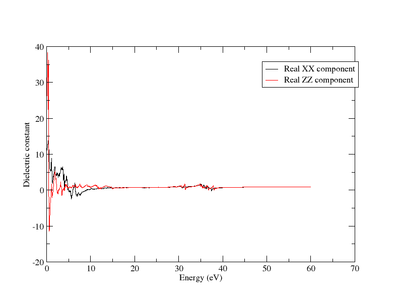
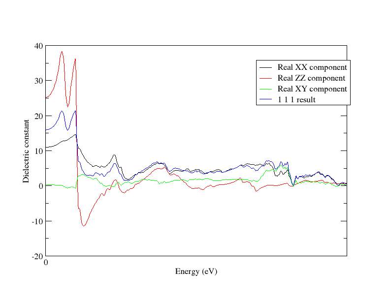
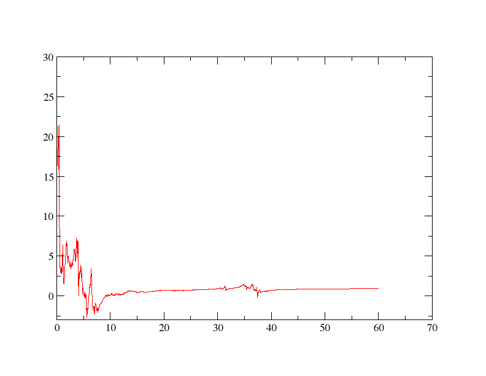
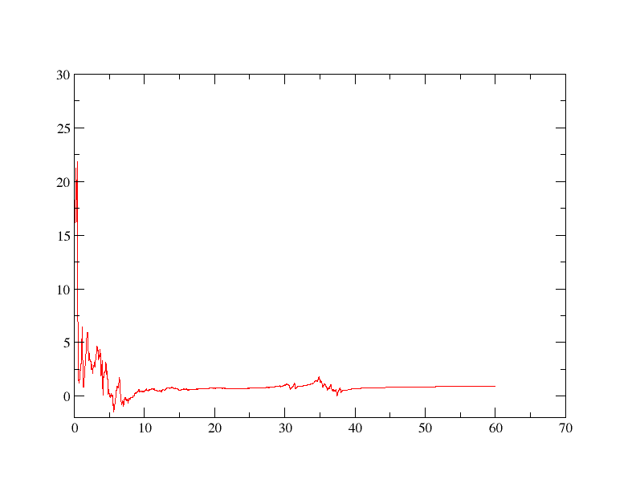

Optics
Optados is capable of getting numerous optical properties of different structures, all of which depend on the wavelength (energy) of light interacting with it. In this tutorial, we will perform an Optados optics calculation on rutile (TiO2) - a birefringent crystal with anisotropic optical properties, examining its single-crystal and polycrystalline (isotropic) properties. Throughout this tutorial, we will be using xmgrace to plot everything, but feel free to use your preferred software.
We will use the cell file
rut.cell
%BLOCK LATTICE_ABC
4.6257000 4.6257000 2.9806000
90.0000000 90.0000000 90.0000000
%ENDBLOCK LATTICE_ABC
%BLOCK POSITIONS_FRAC
Ti 0.0000000 0.0000000 0.0000000
O 0.2821000 0.2821000 0.0000000
%ENDBLOCK POSITIONS_FRAC
SYMMETRY_GENERATE
KPOINTS_MP_GRID 10 10 10
SPECTRAL_KPOINTS_MP_GRID 14 14 14
This cell file was obtained using cif2cell using the structure with the COD ID 1010942, found on the Crystallography Open Database
We will first run a castep calculation using the above cell with the param file
rut.param
Once that is done, we can perform the optical Optados calculations.
Demonstrating Birefringence
We will begin by examining the dielectric tensor. We will do this by using the Opdatos input file
rut.odi
TASK : optics
JDOS_SPACING : 0.01
JDOS_MAX_ENERGY : 60
EFERMI : optados
DOS_SPACING : 0.1
BROADENING : adaptive # Default
ADAPTIVE_SMEARING : 0.4 # Default
OPTICS_GEOM : tensor # Default
OPTICS_LOSSFN_BROADENING : 0.0 # Default
The line TASK : optics is key here, as that is what tells us to perform an optical calculation. The other crucial line is OPTICS_GEOM : tensor - this tells it to calculate the full dielectric tensor of rutile. This produces 2 output files: rut.odo and rut_epsilon.dat - we are interested in the latter.
The output file starts off looking like
# Component 1
0.0000000000000000 10.985963719914423 0.0000000000000000
1.0001666944490749E-002 10.986133776534746 4.5560614006426980E-003
2.0003333888981498E-002 10.990669467897412 5.9329124271557589E-003
separate.py
input_file = 'rut_epsilon.dat'
def write_to_file(component,lines):
file_name = "rut_tens" + str(component) + ".dat"
with open(file_name,"w") as f:
f.writelines(lines)
with open("rut_tens.dat", "r") as f:
lines = f.readlines()[::-1]
component_lines = []
component = 6
for line in lines:
component_lines.append(line)
if "Componen" in line:
write_to_file(component,component_lines)
component -= 1
component_lines = []
Note
It is recommended to copy and do this is in a separate directory - we will be comparing this output to subsequent calculations. In future instructions this will be in the directory "tensors"
We now have 6 files for each component of the 3x3 tensor (keep in mind that it is symmetric ie. \epsilon_{xy} = \epsilon_{yx}). rut_tens1.dat corresponds to \epsilon_{xx}, 2 and 3 and to yy and zz, while 4, 5 and 6 correspond to xy, xz and yz.
Now that we have all the components, let's start actually looking at the results. First, let's plot the real parts of \epsilon_{xx} and \epsilon_{yy} on the same graph. We can do this by using the batch file
plot_12_together.bat
READ BLOCK "rut_tens1.dat"
BLOCK xy "1:2"
S0 LEGEND "Real XX component"
READ BLOCK "rut_tens2.dat"
BLOCK xy "1:2"
S1 LEGEND "Real YY component"
XAXIS LABEL "Energy (eV)"
YAXIS LABEL "Dielectric constant"
and plotting it with xmgrace via
xmgrace -batch plot_12_together.bat
This gives us a graph looking like this:
There is only 1 line visible - they (almost) perfectly overlap, meaning that \epsilon_{xx} = \epsilon_{yy}. Now let's try comparing \epsilon_{xx} with \epsilon_{zz} - all you have to do is make the 2nd block rut_tens3.dat (and change the legend appropriately).

This is a rather interesting result: this seems that the dielectric function in different directions is different - the material is optically anisotropic. Since it is identical in 2 directions, it would be considered birefringent.
Examining Dielectric Tensor
So now that we have the dielectric function tensor, let's examine how this corresponds to its (anisotropic) optical properties We will run Optados again (no need to rerun Castep), changing the line
in the rut.odi file to the lines
Let's compare the dielectric function output with the \epsilon_{xx} output we got from the tensor. Run
xmgrace rut_epsilon.dat tensors/rut_tens1.dat
We will get the same graph as the 1st one. This is no surprise at all: if light is polarised in the xx direction, it'll effectively feel the \epsilon_{xx} dielectric function.
Let's try a more interesting example - change the direction line to
OPTICS_QDIR : 1 1 1
Now the result shouldn't align with anything. To demonstrate that let's compare it to \epsilon_{xx}, \epsilon_{zz} and \epsilon_{xy}, all on the same graph - luckily xmgrace makes it very easy to plot them together. We'll modify the batch file to include all of them -
compare.bat
READ BLOCK "tensors/rut_tens1.dat"
BLOCK xy "1:2"
S0 LEGEND "Real XX component"
READ BLOCK "tensors/rut_tens3.dat"
BLOCK xy "1:2"
S1 LEGEND "Real ZZ component"
READ BLOCK "tensors/rut_tens4.dat"
BLOCK xy "1:2"
S2 LEGEND "Real XY component"
READ BLOCK "rut_epsilon.dat"
BLOCK xy "1:2"
S3 LEGEND "1 1 1 result"
XAXIS LABEL "Energy (eV)"
YAXIS LABEL "Dielectric constant"
WORLD XMAX 5
We have also made the graph smaller (only goes up to 5eV) in the last line to make it easier to see overlaps (or lack of them). This is the kind of output we get:

You can try comparing it to any other value, but you'll find it's completely different. So how is this related to the tensor?
Considering the properties of tensors in general, we know that the value from a tensor in any direction is given by the equation
Where \epsilon' is the dielectric constant in the direction of \hat{\mathbf{n}}, and \mathbf{\epsilon} is the dielectric matrix.
Note
In this tutorial, a symbol being bold and underlined (like \underline{\mathbf{\epsilon}}) shows that it's a matrix, while being just bold (like \mathbf{n}) shows that it's a vector.
Let's quickly work through what we'd expect in the (111) direction and compare that with what we get from Optados. To get
$$ \underline{\mathbf{\epsilon}} \hat{\mathbf{n}} $$ we do
Then to get the final result we do
$$ = \frac{1}{3} \bigg ( \epsilon_{xx} + \epsilon_{yy} + \epsilon_{zz} + 2(\epsilon_{xy} + \epsilon_{yz} + \epsilon_{zx}) \bigg ) $$
Let's check if this is true using our separated dielectric function tensor files. We will get a function that is equal to the above equation using a Python script, and plot it on the same graph as the case polarised in the (111) direction.
You may use the script
get_in_direction.py
import numpy as np
eps = {key: np.loadtxt(f"rut_tens{i}.dat")
for i, key in enumerate(('xx', 'yy', 'zz', 'xy', 'xz', 'yz'))}
eps_vals = {key: val[:, 1] for key, val in eps.items()}
energies = eps['xx'][:, 0]
eps_111_values = (sum(eps[ind] for ind in ('xx', 'yy', 'zz')) +
2*sum(eps[ind] for ind in ('xy', 'xz', 'yz')) / 3
output_data = np.column_stack((energies, eps_111_values))
output_filename = "rut_111_out.dat"
np.savetxt(output_filename, output_data, fmt='% .16e', header="Energy (eV) Effective Epsilon_111")
This gives the output of the above equation acting on the dielectric function tensor we calculate, stored in rut_111.dat. Now let's see if the 2 results agree: let's try
xmgrace rut_epsilon.dat tensors/rut_111_out.dat
Using rut_epsilon.dat from our last Optados calculation. We should see that the lines almost perfectly overlap:

Now we properly understand what is going on when choosing a certain polarisation direction, and what the dielectric function tensor truly means.
Isotropic Dielectric Function
There is another case to have a look at: what is the dielectric function when the material is polycrystalline, and thus behaves isotropically? Optados can easily find this by changing the keyword in the rut.odi file to
OPTICS_GEOM : tensor
and removing the OPTICS_QDIR line (as the direction no longer matters). If you wish to verify how this is being calculated, use the same Python script as above but change the calculation
eps_111_values = (eps['xx'] + eps['yy'] + eps['zz'] +
2 * eps['xy'] + 2 * eps['xz'] + 2 * eps['yz']) / 3
to
for i in range(len(energies)):
tensor = np.array([
[eps['xx'][i], eps['xy'][i], eps['xz'][i]],
[eps['xy'][i], eps['yy'][i], eps['yz'][i]],
[eps['xz'][i], eps['yz'][i], eps['zz'][i]]
])
eigenvalues = np.linalg.eigvals(tensor)
iso_value = np.mean(eigenvalues)
iso_values.append(eps_111_value)
and change variable, output file name etc. as appropraite
This gives us the average of the eigenvalues of the dielectric matrix for every enegy, giving us the isotropic value. Let's plot them together to see if they're identical:
xmgrace rut_epsilon.dat tensors/rut_111_eigen.dat
We get a graph looking like this:

As expected, the 2 lines overlap: this demonstrates that the polycrystalline calculation is effectively the "average" of the dielectric tensor in all directions, which is what we'd expect for a polycrystalline sample, where we can assume that all directions are equally likely.